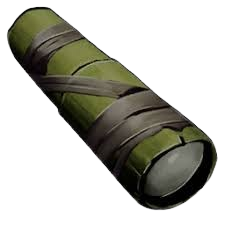

Primera aparición: Temporada 3 - prólogo
Descripción: objeto utilizado para observar lugares lejanos que no se pueden ver con vista humana. El catalejo es utilizado principalmente por los exploradores para ver la peligrosidad del lugar donde van a pisar. En ARK, se utiliza para ver el nivel de un dinosaurio y bases enemigas lejanas.